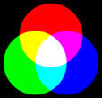
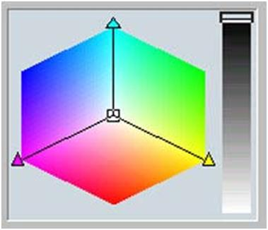
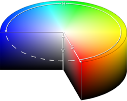

Цветовое разрешение и цветовые модели
Система представления цвета в компьютерной графике. Свойства цвета
Система представления цвета в компьютерной графике. Свойства цвета
Свет – электромагнитное излучение.
Цвет характеризуется действием излучения на глаз человека. Таким образом, лучи света, попадая на сетчатку глаза, производят ощущение цвета.
Распознавание цвета человеком зависит от освещения объекта, отражающего свет, от глаз и свойств мозга наблюдателя.
Свет, попадая в глаз, преобразуется в сигналы нейронов, находящихся в сетчатке глаза, и по оптическому нерву пересылается в мозг. Глаз реагирует на три дополнительных первичных цвета: красный, зеленый и синий.
Излучаемый цвет – это свет, выходящий от источника, например, Солнца, лампочки или экрана монитора.
Отраженный свет – это свет, отразившийся от поверхности объекта. Именно его мы видим, когда смотрим на какой-либо предмет, не являющийся источником света. Бумага, на которой мы печатаем изображение, отражает свет.
Излучаемый свет, идущий непосредственно от источника к глазу человека, сохраняет в себе все цвета, из которых он создан. Но этот свет может измениться при отражении объекта.
Свойства цвета
Для описания цветовых оттенков, которые могут быть воспроизведены на экране компьютера и на принтере, разработаны специальные средства – цветовые модели (системы цветов).
У цвета есть три атрибута: цветовой тон, яркость и насыщенность.
Цветовой тон является таким атрибутом цвета, который позволяет различать их как красный, желтый, зеленый, синий или как промежуточный между двумя соседними парами этих цветов.
Яркость относится к относительной светлости или темноте цвета. Она определяется степенью отражения от физической поверхности, на которую падает свет. Чем выше яркость, тем светлее цвет.
Насыщенность заключается в том, насколько живым выглядит цвет. Она измеряется в терминах отличия данного цвета от бесцветного (нейтрального) серого цвета с той же самой степенью яркости. Чем ниже насыщенность, тем более серым выглядит цвет. При нулевой насыщенности цвет становится серым. Так как цвет может получиться в процессе излучения и в процессе отражения, то существуют две противоположных модели его описания: модель RGB и модель CMYK.
Цветовое разрешение
Качество растрового изображения определяется его разрешением (количеством точек по горизонтали и вертикали) и глубиной цвета, которая задает используемую палитру цветов (16, 256, 65 536 цветов и более).
При работе с цветом используются понятия цветовое разрешение (его еще называют глубиной цвета) и цветовая модель.
Глубина цвета - количество бит, используемых для кодирования цвета точки.
Цветовое разрешение определяет метод кодирования цветовой информации, и от него зависит то, сколько цветов на экране может отображаться одновременно.
Глубина цвета и количество отображаемых цветов
| Глубина цвета (I) (бит) | Количество отображаемых цветов (N = 2I) |
| 1 | 21 = 2 |
| 8 | 28 = 256 |
| 16 (High Color) | 216 = 65536 |
| 24 (True Color) | 224 = 16 777 216 |
| 32 | 232 = 4 294 967 296 |
Цвета в природе редко являются простыми. Большинство цветовых оттенков образуется смешением основных цветов.
Способ разделения цветового оттенка на составляющие компоненты называется цветовой моделью.
Существует много различных типов цветовых моделей, но в компьютерной графике, как правило, применяется не более трех. Эти модели известны под названиями: RGB, CMYK и HSB.
RGB
Цветовая модель RGB наиболее проста для понимания и очевидна. В этой модели работают мониторы и бытовые телевизоры. Любой цвет считается состоящим из трех основных компонентов: красного (Red), зеленого (Green) и синего (Blue). Эти цвета называются основными. Считается также, что при наложении одного компонента на другой яркость суммарного цвета увеличивается. Совмещение трех компонентов дает нейтральный цвет (серый), который при большой яркости стремится к белому цвету.

Это соответствует тому, что мы наблюдаем на экране монитора, поэтому данную модель применяют всегда, когда готовится изображение, предназначенное для воспроизведения на экране. Если изображение проходит компьютерную обработку в графическом редакторе, то его тоже следует представить в этой модели. В графических редакторах имеются средства для преобразования изображений из одной цветовой модели в другую.
Метод получения нового оттенка суммированием яркостей составляющих компонентов называют аддитивным методом. Он применяется всюду, где цветное изображение рассматривается в проходящем свете («на просвет»): в мониторах, слайд-проекторах и т. п. Нетрудно догадаться, что чем меньше яркость, тем темнее оттенок. Представьте себе лучи цветных прожекторов, светящие в одно и то же место.
Поэтому в аддитивной модели центральная точка, имеющая нулевые значения компонентов (0, 0, 0), имеет черный цвет (отсутствие свечения экрана монитора). Белому цвету соответствуют максимальные значения составляющих (255, 255, 255).
Модель RGB является аддитивной, а ее компоненты — красный, зеленый и синий — называют основными цветами.
CMYK
Цветовую модель CMYK используют для подготовки не экранных, а печатных изображений. Они отличаются тем, что их видят не в проходящем, а в отраженном свете. Чем больше краски положено на бумагу, тем больше света она поглощает и меньше отражает. Совмещение трех основных красок поглощает почти весь падающий свет, и со стороны изображение выглядит почти черным. В отличие от модели RGB увеличение количества краски приводит не к увеличению визуальной яркости, а наоборот к ее уменьшению. Поэтому для подготовки печатных изображений используется не аддитивная (суммирующая) модель, а субтрактивная (вычитающая) модель.
Цветовыми компонентами этой модели являются не основные цвета, а те, которые получаются в результате вычитания основных цветов из белого:
• голубой (cyan) = белый ‒ красный = зеленый + синий;
• пурпурный (magenta) = белый ‒ зеленый = красный + синий;
• желтый (yellow) = белый ‒ синий = красный + зеленый.
Эти три цвета называются дополнительными, потому что они дополняют основные цвета до белого. Существенную трудность в полиграфии представляет черный цвет. Теоретически его можно получить совмещением трех основных или дополнительных красок, но на практике результат оказывается негодным. Поэтому в цветовую модель CMYK добавлен четвертый компонент — черный. Ему эта система обязана буквой К в названии (blacK).
В отличие от модели RGB, центральная точка имеет белый цвет (отсутствие красителей на белой бумаге). К трем цветовым координатам добавлена четвертая — интенсивность черной краски. Ось черного цвета выглядит обособленной, но в этом есть смысл: при сложении цветных составляющих с черным цветом все равно получится черный цвет.
Сложение цветов в модели CMYK каждый может проверить, взяв в руки голубой, розовый и желтый карандаши или фломастеры. Смесь голубого и желтого на бумаге дает зеленый цвет, розового с желтым — красный и т. д. При смешении всех трех цветов получается неопределенный темный цвет. Поэтому в этой модели черный цвет и понадобился дополнительно.
Цветоделение
В типографиях цветные изображения печатают в несколько приемов. Накладывая на бумагу по очереди голубой, пурпурный, желтый и черный отпечатки, получают полноцветную иллюстрацию. Поэтому готовое изображение, полученное на компьютере, перед печатью разделяют на четыре составляющих одноцветных изображения. Этот процесс называется цветоделением. Современные графические редакторы имеют средства для выполнения этой операции.
Цветоделение - операция разложения цветного изображения на три или четыре изображения, соответствующих применяемым цветовым компонентам.
HSB
Некоторые графические редакторы позволяют работать с цветовой моделью HSB. Если модель RGB наиболее удобна для компьютера, а модель CMYK — для типографий, то модель HSB наиболее удобна для человека. Она проста и интуитивно понятна.
В модели HSB тоже три компонента: оттенок цвета (Hue), насыщенность цвета (Saturation) и яркость цвета (Brightness). Регулируя эти три компонента, можно получить столь же много произвольных цветов, как и при работе с другими моделями.
Цветовая модель HSB удобна для применения в тех графических редакторах, которые ориентированы не на обработку готовых изображений, а на их создание своими руками. Существуют такие программы, которые позволяют имитировать различные инструменты художника (кисти, перья, фломастеры, карандаши), материалы красок (акварель, гуашь, масло, тушь, уголь, пастель) и материалы полотна (холст, картон, рисовая бумага и пр.).
Создавая собственное художественное произведение, удобно работать в модели HSB, а по окончании работы его можно преобразовать в модель RGB или CMYK, в зависимости от того, будет ли оно использоваться как экранная или печатная иллюстрация.
Flash-ролик "Цветовая модель HSB" (источник)
Цветовая палитра
Цветовая палитра — это таблица данных, в которой хранится информация о том, каким кодом закодирован тот или иной цвет. Эта таблица создается и хранится вместе с графическим файлом.
Самый удобный для компьютера способ кодирования цвета — 24-разрядный, True Color. В этом режиме на кодирование каждой цветовой составляющей R (красной), G (зеленой) и В (синей) отводится по одному байту (8 битов). Яркость каждой составляющей выражается числом от 0 до 255, и любой цвет из 16,5 миллионов компьютер может воспроизвести по трем кодам. В этом случае цветовая палитра не нужна, поскольку в трех байтах и так достаточно информации о цвете конкретного пикселя.
Индексная палитра
Существенно сложнее обстоит дело, когда изображение имеет только 256 цветов, кодируемых одним байтом. В этом случае каждый цветовой оттенок представлен одним числом, причем это число выражает не цвет пикселя, а индекс цвета (его номер). Сам же цвет разыскивается по этому номеру в сопроводительной цветовой палитре, приложенной к файлу. Такие цветовые палитры еще называют индексными палитрами. Разные изображения могут иметь разные цветовые палитры. Например, в одном изображении зеленый цвет может кодироваться индексом 64, а в другом изображении этот индекс может быть отдан розовому цвету. Если воспроизвести изображение с «чужой» цветовой палитрой, то зеленая елка на экране может оказаться розовой.
Фиксированная палитра
В тех случаях, когда цвет изображения закодирован двумя байтами (режим High Color), на экране возможно изображение 65 тысяч цветов. Разумеется, это не все возможные цвета, а лишь одна двести пятьдесят шестая доля общего непрерывного спектра красок, доступного в режиме True Color. В таком изображении каждый двухбайтный код тоже выражает какой-то цвет из общего спектра. Но в данном случае нельзя приложить к файлу индексную палитру, в которой было бы записано, какой код какому цвету соответствует, поскольку в этой таблице было бы 65 тысяч записей и ее размер составил бы сотни тысяч байтов. Вряд ли есть смысл прикладывать к файлу таблицу, которая может быть по размеру больше самого файла. В этом случае используют понятие фиксированной палитры. Ее не надо прикладывать к файлу, поскольку в любом графическом файле, имеющем шестнадцатиразрядное кодирование цвета, один и тот же код всегда выражает один и тот же цвет.